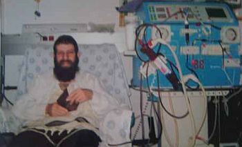

הוא היה שחקן מצליח, אבל שנתיים שבהן המתין להשתלת כליה, כך פתאום באמצע החיים, הבי
הוא היה שחקן מצליח, אבל שנתיים שבהן המתין להשתלת כליה, כך פתאום באמצע החיים, הביאו אותו לגלות בתוכו רבדים עמוקים תוך כדי לימוד פסיכודרמה. את שני הכלים הללו, משחק ופסיכודרמה, הוא רותם היום להעצים אנשים ולתת להם תובנות של “אפשר יותר…” * הכירו את ר’ יצחק דורי, שחקן הנשמה
הוא היה שחקן מצליח, אבל שנתיים שבהן המתין להשתלת כליה, כך פתאום באמצע החיים, הביאו אותו לגלות בתוכו רבדים עמוקים תוך כדי לימוד פסיכודרמה. את שני הכלים הללו, משחק ופסיכודרמה, הוא רותם היום להעצים אנשים ולתת להם תובנות של “אפשר יותר…” * הכירו את ר’ יצחק דורי, שחקן הנשמה

כשסיים את שירותו הצבאי, הפך את תחביבו למקצוע והשלים תואר ראשון בלימודי משחק ותיאטרון באוניברסיטת תל–אביב, שם גם נחשף לראשונה לדרכה של חסידות חב”ד ונשבה בקסמה. תהליך התקרבותו היה איטי מאוד, כפי שהוא מעיד אך גם בטוח ושלם. מי שמכיר את דורי יודע שאת המניירות הוא מותיר לבמה, בחייו האישיים מדובר באדם עם רגישות, כנות ולבביות.
בשנים האחרונות, לצד עבודתו כשחקן מצליח משמש כמטפל בשיטת פסיכודרמה. אל עולם הטיפול הגיע לאחר שבחייו האישיים עבר חוויה דרמטית וטראומתית לא פשוטה - לפני ארבע שנים חדלו לפתע כליותיו לפעול והוא החל לבקר תכופות בבתי רפואה ובמכוני דיאליזה. כמה ניסיונות השתלה שעבר לא צלחו, עד אשר הגיע התורם המושיע שהעמידו על רגליו. חוויה זו טלטלה את נפשו ובעקבותיה החליט לסייע לאחרים הזקוקים לעזרה.
החברים כינו אותו: “משיח”…
דורי נולד במשפחה מסורתית ישראלית קלאסית לאביו שנולד ועלה כילד צעיר מעיראק, ואימא בת למשפחת ניצולי שואה. “הייתה הרבה אמונה בבית שלנו, אך היא לא תורגמה למצוות מעשיות. מדי פעם הייתי רואה את אבי מניח תפילין. בימים של חג ומועד היינו מתכנסים בבית כנסת ועושים סעודת חג. המסר המרכזי על ברכיו התחנכנו היה להשקיע בלימודים. אבא גדל במשפחה מעוטת יכולת וזוהה על ידי אנשים טובים עם ‘ראש מבריק’ ונשלח לטכניון. הוא הצליח מאוד ויצא עם עבודה בתחום הנדסת אווירוניקה וראה הצלחה רבה בעמלו”.
לצד הלימודים בבית הספר בהם השקיע רבות בהשראת אביו, חבר דורי לנוער ‘העובד והלומד’, שם בילה את שעות הפנאי. לא פעם מצא את עצמו מתווכח עם עמיתים לתנועה ועם המדריכים על נושאי יהדות. בשיעורי תנ”ך בבית הספר תמיד הלך בדרך התורה הצרופה למרות הידע המועט שלו. “בכיתתי היה ילד שאביו היה שומר מצוות ולמד עימו תנ”ך. הילד הזה היה פוצח תדיר בוויכוחים עם המורה לתנ”ך שהייתה מביאה פירושים של פרשנים והיסטוריונים לא דתיים. תמיד מצאתי את עצמי מצדד בדבריו שהיו נראים לי הכי אמתיים”.
לקראת סוף לימודיו בתיכון, ארגנו חברי כיתתו נשף סיום מפואר עם הופעות ופעילויות לרוב. מיודענו שובץ בתפקיד השחקן הראשי וקצר תשבחות רבות. כחלק מתהליך הסיום, ארגנו החברים ספר מחזור, בו צוינו החברים כל אחד בכינויו, וצירפו לעמוד גזרי עיתונים מתאימים. “הכינוי שבחרו עבורי היה ‘משיח’”, מחייך דורי, “מפני שתמיד הייתי מסייע לתלמידים אחרים. גזרי העיתון שהדביקו אצלי היו כתבות שעסקו בדמותו של הרבי”…
בסוף לימודיו בתיכון, חווה עם בני משפחתו מאורע טראומתי: אביו נפטר בחטף בדמי ימיו. “בדיעבד אני יודע שלקח לי כמה שנים להתאושש מהחוויה הקשה הזו. חסרונו של אבי הורגש מאוד. בעקבות אותו אירוע ניצת אצלי הניצוץ היהודי והתחלתי לפקוד יותר את בית הכנסת ולהשתתף בשיעורי תורה.
לאחר שנת דחיה בה הצטרף לקומונה במסגרת גרעין בחטיבת הנח”ל, התגייס יצחק דורי ושובץ בשירות קרבי, שם עשה שירות של שלוש שנים כלוחם וכמפקד. “היו אלו שלוש שנים הכי שקטות בגיזרה בעשרות השנים האחרונות”, הוא אומר. “אני זוכר אותנו מסיירים בקבוצה של שלושה חיילים בלב עזה ללא חשש ופחד”.
כשסיים את שירותו הצבאי החל לעבוד בעבודות מזדמנות וחיפש להעמיק את מקצועיותו בתחום שאהב - תיאטרון ומשחק. “תרתי אחר צוותי בידור במלונות בטבריה ובים המלח. עבדתי כמה חודשים בטבריה, אך די מהר השתעממתי. חיפשתי משהו אינטנסיבי ורציני יותר. הייתה לי תכנית לצאת לאירופה, אך מי שגנז את תכניותיי היה המורה למשחק אייל כהן, שלימים הקים סטודיו מצליח לתיאטרון והזמין אותי אליו לגבעתיים ללמוד ולהשתלם.
“השתתפתי אצלו בשיעור לדוגמא, וזה הספיק לי להבין שזה מה שארצה ללמוד ולעסוק בחיים. ממנו למדתי רבות”.
מאוחר יותר החליט דורי להפוך את התחביב למקצוע של ממש, ונכנס ללמוד במגמת תיאטרון באוניברסיטת תל–אביב.
“בשבת הראשונה שלי במעונות הסטודנטים, התעורר בי רצון להתפלל וחיפשתי בית כנסת באזור. לתדהמתי מצאתי שמתחת לאפי פועל בית חב”ד בהנהלתו של הרב פישל ג’ייקובס עם מניני תפילה וסעודות לשבת. הוא וצוות השלוחים שאיתו קיבלו אותי בחום רב, ומאז בכל שבת הפכתי לחלק אינטגראלי מהמניין ומהסועדים בבית חב”ד. חבר ילדות שהתקרב לחב”ד, נדב גולדשטיין, היה לוקח אותי להתוועדויות ובכך העמיק אצלי יותר את החשיפה לחב”ד”.
יצחק דורי החל להבין כי דרך התורה היא הדרך הנכונה, אך יחלפו עוד שנים ארוכות עד שיקבל את החלטת חייו - לחיות בהתאם. “בשלב מסויים התחלתי לקחת חלק בפעילויות של בית חב”ד, אך עם זאת, לא היה לי את האומץ לבחור צד. ייאמר לשבחו של הרב ג’ייקובס שידע איך לפעול איתי; הוא לא לחץ ולא הטריד. להפך, הוא היה סבלני כלפי, ולא פעם אף שימש לי כבן משפחה כשהיה מגיע לצפות בהצגות בהן השתתפתי”.
בדרך ארוכה אך קצרה
את אחת החופשות מהלימודים העביר יצחק בניו–ג’רסי. באותה תקופה כבר החל להתקרב לדרך היהדות והחסידות והוא רצה לבקר ב–770, אך סופת שלגים גדולה שהתחוללה באותה עת מנעה ממנו את הנסיעה. כשטס בפעם השנייה לארה”ב כדי לעבוד ב’עגלות’ ולממן את לימודיו, היה ברור לו שתחנתו הראשונה תהיה ב–770. “בהשגחה פרטית הגעתי ל’בית חיינו’ בהשענא רבה. זכיתי לשלושה ימי התעלות - יומיים חג ושבת. הייתי עם סנדלים ובגדי חול, אך מי שם לב לחיצוניות. האווירה שהייתה שם רוממה אותי מעל הקרקע.
“פגשתי שם בחברים מהלימודים שהתקרבו ליהדות והפכו להיות חסידים, כמו משה שפרלינג, צחי פרנסיס ועוד. הם לקחו אותי לביתו של ר’ משה רובשקין, שם נדהמתי לחוות את רוחב הלב הנדיר של המשפחה. בשלושה ימים אלו לא חדלתי לבכות מהתרגשות. כל השאלות שהיו לי על חב”ד ועל הרבי נעלמו ונמוגו לאחר החוויה שחוויתי ב–770. חצי שנה שהייתי בארצות הברית ועבדתי בעגלות מכירה, ובכל הזדמנות שהייתה לי, נסעתי לביקור אצל הרבי. גם ביקרתי בקביעות בבית חב”ד בעיר בה שהיתי.
“בתום חצי שנת עבודה, שבתי ארצה שונה משיצאתי, עם ציצית וכיפה”.
למגינת ליבו של יצחק, עדיין הוא היה צריך לעבור דרך חתחתים עד שהפך לחסיד. בעצת חבריו מעולם התיאטרון, שכר דירה בלב תל–אביב וחיפש להשתלב בסרטים ובהפקות תיאטרון. “זו הייתה תקופה בה פסחתי על שני הסעיפים. הייתי שחקן ראשי בהצגה בתיאטרון ‘הסמטה’ ביפו לצד ביקורים תכופים בישיבת חזון אליהו החב”דית. כשהגיע פסח וחלק מהאלמנטים של ההצגה היו חמץ, ביקשתי שיעלימו אותם והבאתי במקומם מוצרים כשרים לפסח. כשהגעתי למופע והבנתי שמוצרי החמץ נותרו, עשיתי סקנדל. לא הסכמתי לעלות להופעה, ערבתי בעניין רבנים עד שהוברר שהחמץ בוער באש”…
ביטוי לחייו החצויים, ניתן ללמוד מקורויז מעניין שהוא מספר: באחד הפרויקטים הגדולים של עולם התיאטרון, הציג את מועמדותו, אך לא זכה. מי שכן זכה, שוכנע על ידו להניח תפילין וכך צלמי הטלוויזיה תיעדו אותו קודם לראיונות, כשדורי קושר תפילין על ידו. למרות התנודות בהתקרבותו, הרב ג’ייקובס לא ויתר עליו, ובשלב מסויים שכנע אותו לעבור לגור אצלו בבית בכפר חב”ד. “מדי יום למדתי בישיבת ‘אור התמימים’ בכפר חב”ד. בחלוף תקופה חזרתי לתל–אביב ונכנסתי ללמוד בישיבה ברמת אביב, שם היה ה’מכה בפטיש’ להתקרבותי”.
בשלב מסויים נשא לאישה את בת זוגו, בשעה טובה ומוצלחת.
עסוק בלקלף שכבות
בשנים האחרונות הופיע יצחק דורי בהפקות מקור רבות וכן בסרטים חינוכיים, בהם הוא רואה שליחות. בשלוש שנים האחרונות נכנס לעולם הטיפול באמצעות פסיכודרמה.
למרות שאולי יש קשר כלשהו בין תיאטרון לפיסוכדרמה, לדברי יצחק, אין למקצוע הזה דמיון לתיאטרון. “במשחק, העבודה היא על החיצוניות, והיא משפיעה על הפנימיות, ואילו בפסיכודרמה, הסדר הוא הפוך - הפנימיות מקרינה על החיצוניות”, הוא מסביר.
אל עולם הטיפול הגיע במהלך חוויה רפואית מטלטלת שחווה. “ביום בהיר אחד שתי הכליות שלי חדלו לתפקד. בדיעבד היו לכך כמה סימנים מקדימים, אך העובדה שהייתי בחור צעיר, גרמה לי ולסובבים אותי להקל בכך ראש.
“במשך כמה שנים חוויתי ניסיונות לא פשוטים במטרה למצוא תורם. בינתיים פקדתי את מכוני הדיאליזה שלוש פעמים בשבוע. חצי שנה שהיתי ב–770 בהמתנה לתורם. היו כמה נסיונות שהגוף דחה, ולבסוף הגיעה תרומה מתורם בארץ ישראל שהשיב את חיי למסלול תקין. באותם ימים קודרים עלתה בי המחשבה ללמוד פסיכודרמה. התעניינתי בזה רבות ולבסוף החלטתי להתחיל ללמוד את המקצוע הזה. את הלימודים התחלתי תוך כדי ההתמודדות הרפואית”.
“לימוד הפסיכודרמה סייע לי להכיר צדדים בתוכי, חלקים שהייתה לי התנגדות להכיר, חוויות שהיו עטופות בעטיפות יפות. באותם ימים נחשפתי להרבה כאב אנושי הן אצל הסובבים אותי והן אצל עצמי. הכלים הטיפוליים שנחשפתי אליהם בפסיכודרמה, נתנו לי את היכולת להתמודד נכון”.
מה תמצית השיטה הזו שנקראת פסיכודרמה?
“פסיכודרמה היא בעיקרה עבודה בקבוצה, אך ניתן לעבוד איתה גם ‘אחד על אחד’. הרעיון שעומד בבסיס הוא, להראות לאדם צדדים נוספים של הסיטואציה בה הוא שרוי; לתת לאדם מפתח מחדש לבחור איך הוא רוצה להגיב למצבים שונים בחייו. הרבה פעמים אנחנו חווים חוויה שנחרטת במוחנו בצורה מסוימת, והיא משפיעה מאוד על התגובה שלנו כלפיה בעתיד”.
תן לי דוגמה לרעיון העומד מאחורי הפסיכודרמה.
“אתן לך דוגמה מהשטח. היה ילד אחד, סקרן מטבעו, שהביא הביתה תולעת. כשאמו הבינה מה מסתתר בתוך הקופסה שהביא, הוא ‘חטף על הראש’. התגובה הזו של אמו נחקקה בנפשו והוא הלך איתה כל חייו. היא בהחלט יכולה לגרום לכך שהוא יימנע בעתיד להסתקרן מדברים מסוימים. זה עלול גם לפגוע, מבלי שהילד אפילו ידע לומר זאת, בקשר עם אמו. ילד שחווה חוויה לא נעימה, יכול לפתח מנגנון של הדחקה, אך זה משפיע על הדימוי העצמי שלו בעתיד. השריטה שנשרטה בצעירותו, יכולה להתעצם בהתאם לגיל.
“אתן לך דוגמה נוספת שאני עצמי חוויתי. במהלך הלימודים שלי, איבדתי פעם את המטריה הטובה עליה שמרתי מאד. הנושא של אותו שיעור שהגעתי אליו, היה געגוע ואובדן. התנדבתי אפוא לשתף את החברים לגעגוע שלי לאותה מטריה איכותית ששירתה אותי בנאמנות. משהו בניואנסים של הקול והמילים שלי, גרמו למרצה להבין שזה לא רק מטרייה והוא החל לשאול ולהתעניין. מבלי משים שיתפתי בחוויה קשה שליוותה אותי באותם ימים שכלל לא חשבתי לקשר בינה לבין תגובתי על המטרייה, אך הכול עלה וצף. זה התמצית של הפסיכודרמה”.
תפקיד הפסיכודרמה הוא בעצם לפרק הגנות טבעיות של האדם מול מצבים לא נעימים. לא פעם אותן הגנות דווקא מסייעות לנו. איך מחליטים מתי להסיר ההגנה, אם בכלל?
“הגנה שאדם מפתח להגן על נפשו, היא בהחלט דבר טוב. פעמים רבות היא כורח המציאות ומסייעת לו להתמודד בחיים. ההגנה היא תהליך טבעי בו אדם מסכך על חסרונותיו וקשייו. ולכן, לא אצל כל מטופל אסיר את ההגנה הזו, בטח לא בפזיזות. השאלה מתי לטפל ומתי רק להקשיב, זו שאלה שמלווה אותי אצל כל מטופל מחדש. יש בהחלט ילדים שאני אבחר שלא להסיר אצלם את אותן חומות הגנה, מפני שהדבר יפגע באיכות חייהם. ההגנה מספקת להם כעת ביטחון.
“בכלל, אני משתמש לא רק בשיטות של הפסיכודרמה. בפגישות עם ילדים אני מנצל לא פעם את הניסיון שלי מתחום המשחק והתיאטרון כדי לסייע להם. לא כל פסיכודרמיסט יצליח בכל מצב עם כל אחד, יש גם אכזבות וכישלונות ואנחנו זקוקים לסייעתא דשמיא. לא כל טכניקה שעבדה עם ילד מסויים בהכרח תביא תוצאות אצל ילד אחר”.
אשמח לקבל ממך כמה טיפים, או שיטות עבודה שאנשים יוכלו לקרוא וליישם בביתם, או בכיתה עם תלמידים…
“הטיפ הראשון שאשמח לחלוק, הוא דווקא לא מהפסיכודרמה אלא מעבודתי כשחקן. במשך תקופה ארוכה הרצנו את ההצגה על ‘שני המלכים’ אותה כתב הרב ג’ייקובס על פי הרעיון של ספר התניא. אם מתעורר קונפליקט, אזי לא הילד הוא הבעיה, אלא יצרו גבר עליו ועלינו ללמדו שיש יצר טוב ויש יצר רע והוא בעצמו הוא טוב שלם אלא שיצרו גבר עליו וגרם לו להרים ידיים או להתנהג שלא כיאות. אפשר לבצע פעילות זו בזמנים רגועים.
“דבר נוסף: חשוב מאוד לנהל שיח של רגשות בבית, וזה מגיע ביוזמת ההורים. אם אנחנו נפסיק לפחד מלהציף רגשות ולדבר עליהם, כך ינהגו גם ילדינו. גם מורה יכול ללמוד לדבר בכתה בשפת הרגשות, ואם עושים זאת בצורה נכונה, זה לא יפגע בסמכותיות שלו. כשילד לא יחשוש לדבר על רגשותיו, נחסוך בכך הרבה בעיות. זה לא חייב להיות תמיד טראומות גדולות, אלא אפילו חוויות שליליות פשוטות שהוא חווה ביום יום שיכולות בעתיד לעמוד בדרכו. יחד עם הרגשות כדאי להיות קשובים למה שהילדים מספרים. ילדים רבים נופלים בין הכיסאות כי הם לא זוכים לאוזן קשבת. פנו זמן בשבוע שייוחד להקשבה.
“לבקשתך אציין גם טכניקה מעולם הפסיכודרמה שאני מרבה להשתמש בה והיא נקראת - ‘כפיל’. הילד מספר סיפור, ולאחר שקיבלתי את רשותו, אני בעצם חוזר על מה שהוא סיפר לי כמובן במילים אחרות, מרחיב ולעיתים מעלה שאלות ותהיות. לדוגמה: ילד מגיע מבית הספר ואנחנו שואלים אותו איך עבר עליו היום; הוא עונה כך: ‘היה כיף, היה ממש בסדר גמור וגם היה לא כל כך טוב’. בטכניקה של ‘כפיל’ אני אגיב כלפיו כך: ‘אני שומע שהיה לך יום מורכב, גם טוב וגם לא טוב, יום ממש מבלבל?’ אני מאמץ את דבריו, מאשר ומוסיף משלי”.
אתה יכול להצביע על הצלחות בעבודתך?
“השאלה היא מה נחשב להצלחה. בתחום הטיפול, אין לזה תשובה חד משמעית. כל מטופל מתקדם בקצב שלו, ולעיתים זה לוקח הרבה זמן.
“יש נער אחד שעומד מול עיני כעת. קיבלתי אותו לטיפול אצלי לפני כמה שנים כשאך נכנסתי לעולם הטיפול. הוא היה אז לפני בר–מצווה. המציאות המשפחתית שלו הייתה מאוד מורכבת. אמו התמודדה בגבורה כמה שנים עם המחלה הנוראה, מה שגרם לו להיסגר ולהפוך למופנם. בשנה הראשונה של המפגשים בינינו הוא לא דיבר, רק שיחקנו יחד. רק בחלוף שנה החל לדבר על מצוקותיו ובעיותיו, וכיום הוא מתמודד יפה עם אתגרי החיים. זה סיפור מורכב ואני עודני פוגש את הנער הזה ויודע כמה התקדם, אך כל הזמן הוא זקוק לעידודים ולתזכורות.
“בכלל, טיפול בדרמה זה לא כמו הצגה שאתה יורד מהבמה ויודע היטב אך היא הייתה לפי תגובת הקהל. עולם הטיפול הוא רחוק מ’זבנג וגמרנו’. הנפש מורכבת מאד, ומדובר בתהליכים שנמשכים לעיתים זמן ממושך”.
אתה משתמש בעבודתך רק בשיטות של פסיכודרמה?
“בהחלט לא. בשיטת הפסיכודרמה המטופל צריך להביא סיפור על עצמו ואז ישנה הקשבה והבעה מול אותו סיפור, אך אני פוגש מטופלים רבים, בייחוד ילדים צעירים, שלא מעוניינים להביע את עצמם בסיפור. אצל ילדים ראיתי כי קל להם יותר להיפתח דרך משחק, ובדרך זו ניתן ללמוד רבות על מה שמתחולל בנפש הילד.
“לרוב, כשנשאל את הילד בצורה ישירה, הוא לא ידבר אך בצורה עקיפה, דרך משחק, הדברים יצופו ויעלו. לאחרונה אני מרבה לשחק עם ילדים את משחק ‘המונופול’. זהו משחק ארוך ולעיתים משעמם שיכול להימשך על פני כמה וכמה מפגשים. אחד מנדבכי המשחק הזה הוא, שניתן לרכוש בתים. כשאני רוכש בית, אני מעצים את הדיבור על זה, בית חיצוני מול בית פנימי. ילד שחווה טלטלות בביתו, יכול בנקל לבטא את תחושותיו מול הדיבורים הללו.
“אני משתמש הרבה גם באמצעות ציור. זהו כלי יעיל מאוד לדעת אם הילד חווה חוויה טראומתית. תאר לך ילד שצייר יפה ולפתע ציוריו מכוערים, או בחירת הצבעים, עוצמת הלחיצה על הצבע, הקווים, האובייקטים שבוחר לצייר, כל הפרמטרים הללו מנפיקים לנו מידע רב”.
אני חש שליחות גדולה
“בימינו, בכל מקום ובכל קהילה ישנם לא מעט אנשים שהשתלמו ולמדו והם יכולים לתת למי שזקוק, כיוון ודחיפה כדי שיוכלו להתמודד, ולעיתים אף לצאת לדרך חדשה. זה עצמו ממחיש עד כמה העולם היום במקום של בניה יותר, וזה סוג של גאולה.
“גם ברמת המטופלים - אנשים היום מחפשים לחיות חיים טובים. בעוד שבעבר אנשים חיו חיים יותר קשים, ורק במקרים קיצוניים אנשים הסכימו להגיע לטיפול, הרי שכיום, גם על דברים פעוטים אנשים תרים אחר פתרונות.
“אני מרגיש בעבודתי שליחות מאוד גדולה. אני שמח במיוחד על עבודתי בהכנת נערים שסיימו את לימודי ה’תלמוד תורה’ לקראת תנאי הישיבה. זהו סוג אחר של עבודה מרוממת, בה אתה מכין את התלמידים איך להתמודד נכון במעבר הזה”.
•
בימים אלו מקדיש דורי את עיקר מרצו ועתותיו בפסיכודרמה, אך הוא לא זנח גם את עולם המשחק. הוא מופיע כשחקן בסרטים של חברת ‘ניצוצות של קדושה’, ובשיתוף עמם הוא מעביר גם שיעורי דרמה לילדים. בנוסף, בימים אלה הוא עובד על מחזמר מושקע במיוחד אותו כתב גיסו ונקרא “ר’ יענקל”, שיעלה בע”ה בקיץ הקרוב.